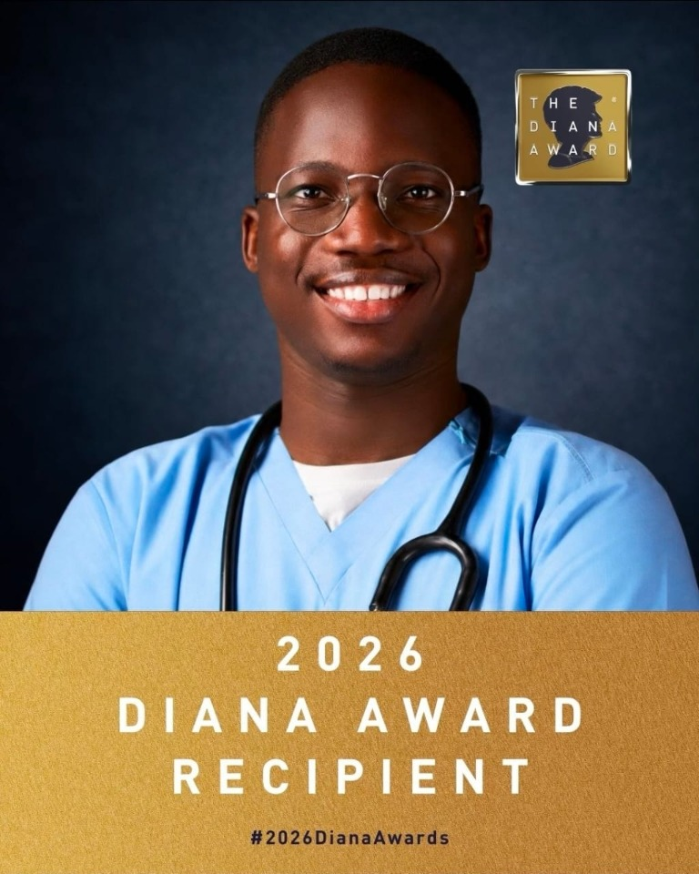
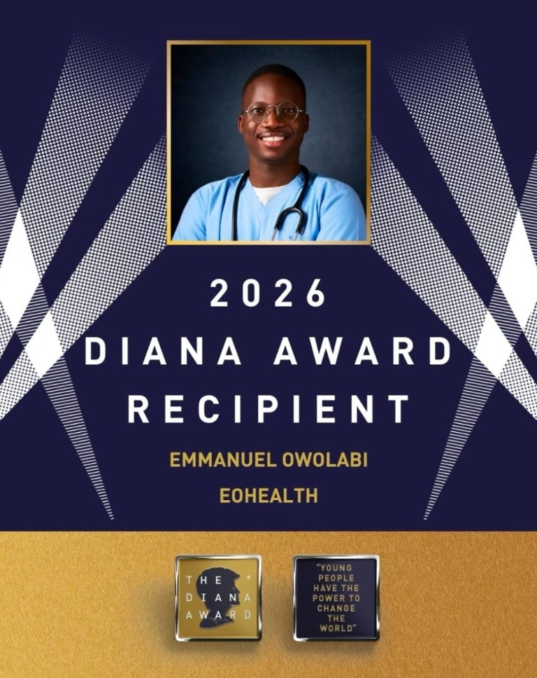
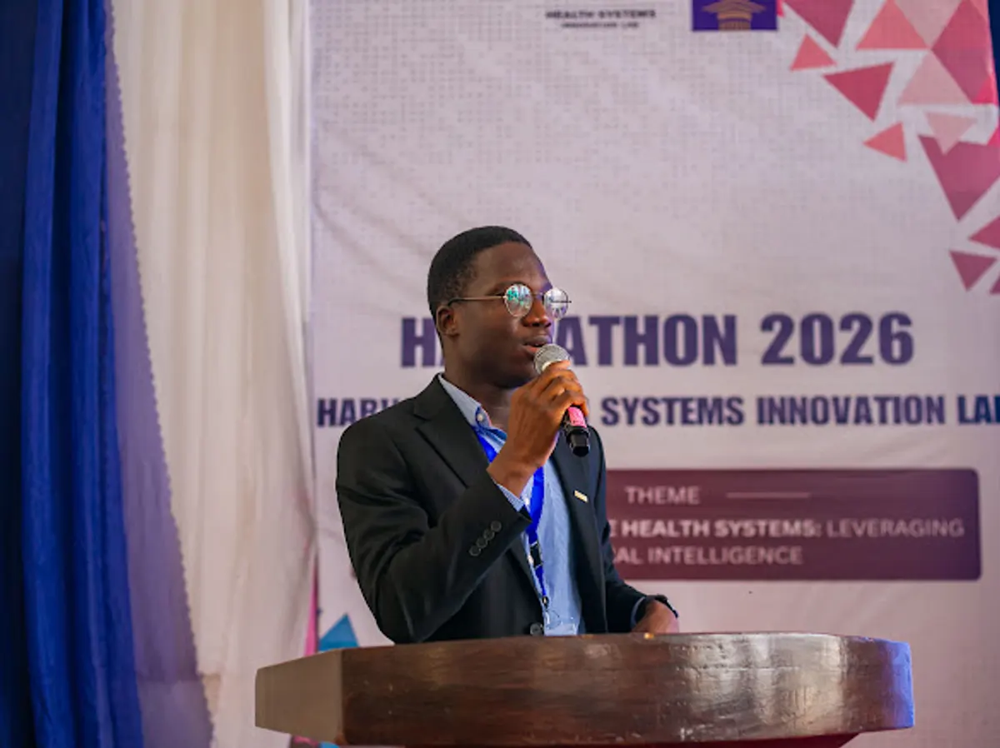

01♡
Healthcare innovation & education
EOhealth
Making reliable health information understandable, developing emerging healthcare professionals and building practical responses to African healthcare challenges.
Physician. Builder. African healthcare.
I am Dr. Emmanuel A. Owolabi, a physician, health innovator and 2026 Diana Award recipient working across technology, research, education and leadership to turn complex healthcare challenges into practical action.
Current focus
Healthcare innovation, research capacity and emerging leaders
01 / ABOUT
My work began with a simple desire to make reliable health information easier to understand. It has grown into a connected practice spanning public health communication, mentorship, research capacity, digital health and institution building.
I connect evidence with implementation: developing people, translating research, using technology responsibly and designing systems that can endure in African healthcare settings.
Download biography pack ↓02 / WORK & IMPACT
Healthcare solutions, mentorship and research capacity—connected to move ideas into action.
Healthcare innovation & education
Making reliable health information understandable, developing emerging healthcare professionals and building practical responses to African healthcare challenges.
Mentorship & capacity building
Helping students and emerging professionals gain direction, develop relevant skills and pursue meaningful opportunities through structured guidance.
Research capacity development
Supporting multidisciplinary researchers to build practical competence, collaborate effectively and contribute to meaningful scientific work.
ViHLERT shows the approach in practice: more than 400 participants from over 30 medical schools trained in health literacy, communication, advocacy and emergency response.
03 / RESEARCH
Research, collaboration and practical competence come together where evidence, implementation and African healthcare realities meet.
RECOGNITION / 2026
Recognised as a 2026 Diana Award recipient for work rooted in service, health education and the belief that young people can create lasting change.


04 / SPEAKING & MEDIA
Keynotes, panels, workshops, interviews and strategic conversations for people building the future of health.
Responsible AI, African health-tech and implementation realities.
Communication, misinformation and the development of healthcare leaders.
Research capacity, collaboration and the evidence-to-implementation gap.
Teams, programmes and institutions designed to endure.
Invite Dr. Owolabi to speakFor healthcare, research, education, technology and leadership audiences.
05 / IMPACT IN PRACTICE
A visual record of health innovation, public-health education, advocacy and research capacity—turning ideas into practical progress.
Leadership & advocacy
Supporting student-facing leadership, health advocacy and community organising.

Innovation & systems
Exploring responsible AI and practical diagnostics for stronger healthcare systems.

Health equity
Joining conversations about more accessible, resilient health systems.

Health literacy & response
Practical communication, misinformation and emergency-response skills for medical students.

Academic exchange
Learning, exchanging knowledge and building collaborations across surgical systems.

Institution building
Showing up for the networks and institutions that help healthcare endure.
THE NEXT CHAPTER
Explore a fuller record of the collaborations, classrooms and conversations behind the mission.
05 / INSIGHTS
Three recurring lenses for examining healthcare, research and the work of developing people.
The African Health Fix
Research to Reality
Beyond the White Coat
The titles changed. The mission became clearer: build people, strengthen institutions and create practical solutions for better healthcare in Africa.
Dr. Emmanuel A. Owolabi
06 / CONTACT
For speaking, media, research, healthcare innovation, EOhealth partnerships and strategic collaborations.